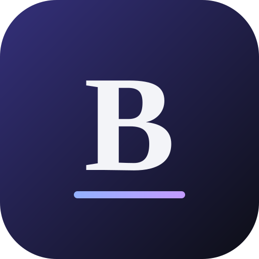

Blankoleo
Kleine Apps, die ich gebaut habe.
- WikiFeed Wikipedia wie ein Feed: spannende Artikel statt Social Media – und er lernt, was dich interessiert.
-
 Klangfeed
Wische durch Musik und entdecke neue Songs mit 30‑Sekunden‑Vorschauen.
Klangfeed
Wische durch Musik und entdecke neue Songs mit 30‑Sekunden‑Vorschauen.
- Klausur-Finder Kurse aus dem Stundenplan wählen und sofort alle eigenen Klausurtermine der Voltaireschule sehen.
-
 Weltradio
Live-Radio aus aller Welt: Sender auf der Weltkarte antippen oder per Zufallsreise von Land zu Land wischen.
Weltradio
Live-Radio aus aller Welt: Sender auf der Weltkarte antippen oder per Zufallsreise von Land zu Land wischen.
Tipp: In Safari über Teilen → Zum Home‑Bildschirm wie eine App nutzen.